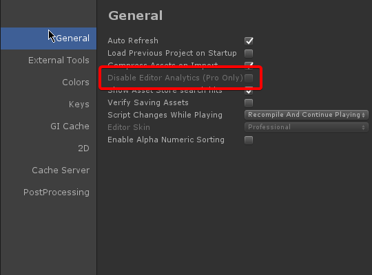

Unity
Unity is a game engine developed by Unity Technologies SF.
Spyware Level: EXTREMELY HIGH
Unity collects user information and uses it in a dubious and malicious way and is a classic example of how analytics are a framework for anti-user behaviour. It should not be trusted. It also is integrated with other spyware programs, like the .NET runtime provided Microsoft, and Visual Studio. You can use alternatives to these, though.
Unity Editor collects user activity
Some users have found that the Unity Editor, left idle for some time, will elicit an email from Unity support
asking for a reason for their inactivity.[1]
Unity support have also been known to contact developers suspected to be earning over the $100,000 revenue limit with the gratis Unity Editor (against Unity EULA) to pressure them into purchasing a Pro license. Several of these developers were not active on services, or did not even have accounts on said services, which Unity support claimed to have "discovered" their projects.[2] Additionally, Unity Editor analytics can no longer be disabled unless users purchase the Pro edition.[3]

Unity games and system data collection
Many Unity games have been found to report telemetry at first launch and have telemetry enabled by default, sometimes with no option to disable it. With no way to disable data collection, players are left to blacklist the game through their firewall.[4] Exported Unity projects collect anonymized statistics about a system’s hardware configuration to monitor and report to developers which type of devices are used to play their Unity engine games. [5]
Credits
This review was written by Alia Sarmor.
Formatting changes were done by the site maintainer.
Sources
1.
Jesse / Dr. Spacezoo (twitter)
[web.archive.org]
2.
Hard sell and coercive tactics from Unity
[web.archive.org]
3.
Can't disable editor analytics since Unity 5.2.3p1 it's now pro only
[Need archive- cant manage to do it...!]
4.
Games w/ potentially telemetry
[web.archive.org]
5.
Tasharen’s Games: Privacy Policy
This article was last edited on 9/10/2018
This article was created on 8/24/2018
If you want to edit this article, or contribute your own article(s), visit us at the git repo on Codeberg. All contributions must be licensed under the CC0 license to be accepted.

Back to catalog